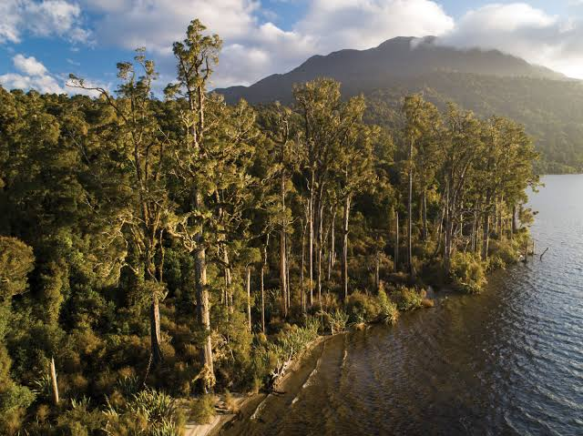
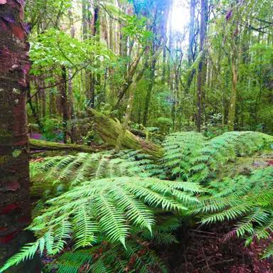

Deforestation in New Zealand is a major issue.
New Zealand forests once covered 80% of the
land, but that share dropped to 23% after
humans arrived. Over 1.5 million hectares
of tree cover since 2021.
Auckland used to be covered in beautiful and rich
forest filled with trees. Because of people cutting
down trees for firewood, space, or to sell wood,
the forest has broken into a couple of thousand
pieces of forest.
In history, New Zealand was overfelled by forest,
but about 1000 years of European and
Polynesian wars have resulted in three-quarters
of the native forest being destroyed.
New Zealand, after millions of years of isolation,
has developed unique species of plants such as silver fern, Kauri trees, etc. 82% of New Zealand's native plants cannot be found anywhere else in
the world.